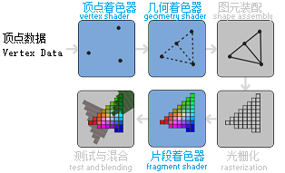
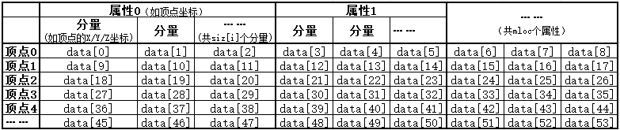
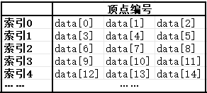

1.2 三角形
观前提示：日志功能用于记录报错信息，如果程序崩溃，看看日志。
如果不理解 layout，可以先跳过，在 1.3.1 节中有例子，可以让你更加理解。
在渲染物体时，为了方便，会将物体表面拆分成一个个三角形，分别进行渲染。
本节的内容，就是渲染一个三角形的流程。
例1.
绘制一个居中的红色三角形。
图形渲染管线
“管线”（Pipeline）其实是“流水线”的意思。因此，图形渲染管线就是一个“流水线”。
不管怎样，这就是把3D坐标转为（屏幕上的）2D坐标，然后把2D坐标转为屏幕上的像素。
这分为多个步骤，这些步骤需要写一个个小程序来实现，这些小程序叫 着色器。
请掌握下框中顶点着色器和片段着色器的内容。
图形渲染管线
如图所示。

我们可以自定义蓝色框的三种着色器。其中顶点着色器和片段着色器是必需的。几何着色器是可选的，本教程暂不涉及。
1. 顶点着色器
：
就是用来把顶点在空间里的坐标转换为在玩家眼前的坐标，之后由机器自动转换为屏幕上的坐标。（后面会讲）
注意
经过此步骤之后，所有的顶点坐标，在三个轴上均应在 -1.0 ~ 1.0 的范围内。否则会被丢弃。符合此要求的坐标又叫做 标准化设备坐标（NDC）。
2. 几何着色器
：
可以生成额外的顶点和图元（图形）。
在本例中，它生成了第四个顶点、新增了图元。
3. 图元装配
：
传入以上的所有顶点，连接成图元。
5. 片段着色器
：
计算一个像素的最终颜色。片段相当于像素。
6. 测试与混合
：
测试，决定是否要丢弃（不渲染）这个片段。
混合，通过不透明度值来混合多个片段的颜色。
顶点着色器负责把每个点的坐标算好，片段着色器负责给每个像素涂上正确的颜色。你只需要写好代码，它们就会自动执行。
顶点数据——网格缓冲
用于存储顶点数据和索引数据。
警告
有些数据是从0开始编号的。
顶点数据

如图所示，一组顶点数据可以含有多个顶点，一个顶点可以含有多个
顶点属性，一个顶点属性可以含有多个
分量。
我们可以通过以下代码声明一个顶点数据对象：
ve_t ve;
它的成员有：
vector<int> siz
：
每个属性的分量数。
vector<float> data
：
存储了数据的具体内容，存储顺序如图所示。
clr()
：
若你不需要这里面的数据了，调用此函数清空数据，释放内存。
索引数据

每条索引指定以哪三个顶点绘制三角形。
可以通过以下代码声明一个索引数据对象：
in_t in;
它的成员有：
vector<unsigned int> data
：
存储顶点编号。
clr()
：
若你不需要这里面的数据了，调用此函数清空数据，释放内存。
例如，data={0,1,2}，就是把顶点0号、1号、2号连接成一个三角形。
顶点顺序
从三角形正面看，最好为逆时针。这会在之后的优化过程中起作用。
创建一个网格缓冲
可以通过以下代码之一：
mesh_buf_t mb(const char* ve_path,const char* in_path,GLenum _upload_mode);
mesh_buf_t mb(ve_t& ave,in_t& ain,GLenum _upload_mode,bool use_typ);
其中，第一种用于从文件读取数据，第一、二个参数为顶点数据文件、索引数据文件的路径。
第二种直接传入对象。第一、二个参数为顶点数据、索引数据。
第三个参数代表数据改变频率，为以下三个值之一：
gle.draw_never_chg
gle.draw_often_chg
gle.draw_always_chg
gle 是库里预先定义好的一个对象，里面存放了常用的 OpenGL 选项，比如 gle.draw_never_chg 表示“数据几乎不变”，gle.draw_often_chg 表示“数据经常改变”。你直接照抄示例里的写法即可，暂时不需要深究。
第四个参数在当前版本忽略,随便填1或0，目前没有作用。
例如：
mesh_buf_t mb("res/eg1.ve","res/eg1.in",gle.draw_always_chg);
文件格式
1. 顶点数据
扩展名
*.ve
例如：(一个居中的三角形)
1
3
-0.5 -0.5 0
0.5 -0.5 0
0 0.5 0
2. 索引数据
扩展名
*.in
例如：
0 1 2
使用一个网格缓冲
声明之后，就会自动上传。渲染需要使用哪个缓冲的数据，就绑定哪个缓冲：
mb.bind();
若你不需要之，调用此函数清空数据，释放内存。
mb.clr();
创建、使用着色器
可以通过以下代码创建：
shader_t sd(const char* vs_path,conat char* fs_path);
其中两个参数分别为顶点着色器和片段着色器代码的路径。
例如：shader_t sd("res/eg1.vs","res/eg1.fs");
可以调用以下函数使用：
sd.use();
警告
创建之后不会自动使用，要手动调用这个函数。
调用之后就可以渲染物体了。
着色器代码（GLSL，OpenGL Shader Language）
下一节是关于着色器的教程。现在你只需要稍微了解。
语法类似于C语言。
第一行一定会是一个版本声明：(这是固定的，照抄就行)
#version 330 core
顶点着色器
扩展名 *.vs。
接下来，我们使用以下代码（从网格缓冲中）获取顶点属性。
layout (location = 0) in vec3 v_pos;
layout (location = 0)
：
表示变量值来自顶点数据。
0
：
表示该变量接收顶点数据中的第0号属性（即 ve_t.siz[0] 对应的数据）。
接下来是主函数。
void main(){
gl_Position=vec4(v_pos.x,v_pos.y,v_pos.z,1.0);
}
注意
主函数必须是 void 类型。
gl_Position
：
顶点着色器的返回值。在主函数中赋值即可。
它的数据类型为 vec4（四分量向量）。
vec4( , , , )
：
返回一个四分量向量。
片段着色器
扩展名 *.fs。
一个输出变量（类型：vec4 ）。代表片段颜色。
out vec4 fcol;
主函数。
void main(){
fcol=vec4(1.0f,0.0f,0.0f,1.0f); // red
}
绘制一个三角形
调用函数：
gl.triangle(int _stt,int _siz);
从 _stt 号索引开始，绘制 _siz 个三角形。
如：gl.triangle(0,1);
代表绘制索引0的三角形。
好了，我们已经能绘制一个三角形了。
例1.
解答 eg1
练习1.
绘制一个居中的绿色矩形。（提示：把两个三角形拼起来）
详细提示&答案
我们怎么确认这个矩形是由两个三角形拼起来的呢？
将答案的第12行解除注释，再次运行发现仅绘制了三角形的边框。
这就是
线框模式。
gl.line();
gl.fill();
启用
禁用
练习2.
在练习1的基础上，修改数据和代码，使两个三角形使用不同的网格缓冲。提示&答案
练习3.
在练习1的基础上，修改数据和代码，使两个三角形使用不同的着色器（其中一个着色器输出绿色，另一个为青色）。答案 ex3。
总结
gl_t
gl.triangle(int _stt, int _siz)
：
从第 _stt 个索引开始，绘制 _siz 个三角形。
gl.line()
：
启用线框模式，三角形只画边框。
网格缓冲
网格缓冲是用于存储顶点、索引数据的对象。
创建（从文件）
：
mesh_buf_t mb("顶点.ve", "索引.in", gle.draw_****_chg);
创建（从内存）
：
mesh_buf_t mb(ve对象, in对象, gle.draw_****_chg, true);
第四个参数当前无作用，随便填。
mb.bind()
：
绑定该网格缓冲，之后绘制的三角形将使用它的数据。
顶点数据
声明
ve_t ve;
成员
vector<int> siz
：
每个属性的分量数。
vector<float> data
：
存储了数据的具体内容，存储顺序如图所示。
clr()
：
若你不需要这里面的数据了，调用此函数清空数据，释放内存。
索引数据
声明
in_t in;
成员
vector<unsigned int> data
clr()
存储顶点编号。
若你不需要之，调用此函数清空数据，释放内存。
着色器（shader_t）
创建
：
shader_t sd("顶点.vs", "片段.fs");
sd.use()
：
激活这个着色器程序，之后绘制的三角形将使用它。
顶点着色器是用于接收并传递顶点数据、计算顶点位置的着色器程序。
片段着色器是用于计算片段（像素）颜色的着色器程序。
下一节